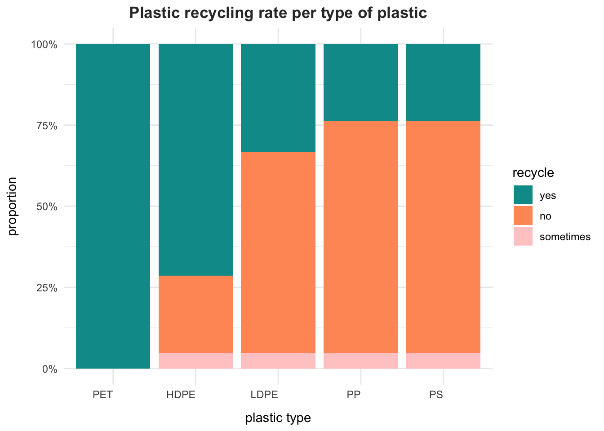

ETH Zürich, Research Beyond the Lab: Open Science and Research Methods for a Global Engineer
Published
June 6, 2024
Keywords
plastic waste, waste management
Introduction
Switzerland faces significant challenges in recycling plastic waste. Each person in the country produces an average of 95 kg of plastic waste annually @2023year. According to Patrick Semadeni, vice president of KUNSTOFF.swiss, Switzerland lacks the separation and recycling capacity to process all the collected plastic waste effectively @turuban2024why. This survey seeks to gain insights into the plastic waste management practices of individuals under 30 years old living in Switzerland. A potential solution could be separating different types of plastics at home for collection. The study aims to answer the following research question: To what extent are individuals under 30 in Switzerland aware of the environmental and health impacts of plastic? How do they recycle different types of plastics, and how willing are they to modify their plastic consumption and waste management practices?
Methods
Data was collected via a questionnaire distributed through Google Forms as part of a project for the Research Beyond The Lab course at ETH Zurich. The 21 respondents, all under 30 years old and residing in Zurich, volunteered to complete the questionnaire. The sample was selected to ensure consistency in age, as the study was conducted by an ETH Zurich student. This approach aimed to minimize outliers and provide a focused perspective on the targeted demographic.
Results
Let us start by having a look at our respondents. What is the age mean and does everyone recycle plastic?
# Load required libraries -----------------------------------library(tidyverse)library(readxl)library(janitor)library(dplyr)library(knitr)library(kableExtra)# Import data -----------------------------------------------data <-read_csv("../data/processed/plastic_waste_processed.csv")# Compute plastic recycling rate ----------------------------recycling_summary <- data |>group_by(rec_plastic) |>summarise(count =n()) |>mutate(percentage =round(count /sum(count) *100, digits =1))# Create table ----------------------------------------------recycling_summary |>kable(align ="c")# Save data underlying the table ----------------------------#write_csv(here::here("data/final/tbl-gapminder-mean.csv"))
Table 1: Plastic recycling rate
rec_plastic
count
percentage
Sometimes
1
4.8
Yes
20
95.2
# Compute age meanage_mean <-mean(data$age, na.rm =TRUE)
So, as displayed in Table 1, almost every participant recycles plastic.
Now, what kind of plastics is recycled the most? To answer this, let us use a stacked bar chart.
# Load required libraries -----------------------------------library(ggplot2)library(dplyr)library(tidyr)# Convert data to long format -------------------------------data_long <- data |>pivot_longer(cols = rec_PET:rec_PS, names_to ="plastic_type", values_to ="rec")# Calculate the proportions and order data ------------------data_proportions <- data_long |>group_by(plastic_type, rec) |>summarise(count =n(), .groups ="drop") |>group_by(plastic_type) |>mutate(proportion = count /sum(count)) |>ungroup()order_data <- data_proportions |>filter(rec =="Yes") |>arrange(desc(proportion))data_proportions$plastic_type <-factor(data_proportions$plastic_type, levels = order_data$plastic_type)# Create the stacked bar chart ------------------------------plastic_type_labels <-c("PET", "HDPE", "LDPE", "PP", "PS")ggplot(data_proportions, aes(x = plastic_type, y = proportion, fill =factor(rec, levels =c("Yes", "No", "Sometimes")))) +geom_bar(stat ="identity") +scale_y_continuous(labels = scales::label_percent()) +scale_x_discrete(labels = plastic_type_labels) +scale_fill_manual(values =c("Yes"="#009999", "No"="#FF9966", "Sometimes"="#FFCCCC"), labels =c("yes", "no", "sometimes")) +labs(title ="Recycled plastics",x ="plastic type",y ="proportion",fill ="recycle" ) +theme_minimal() +theme(plot.title =element_text(hjust =0.5, face ="bold", color ="#333333"))# Save data underlying the figure ---------------------------#write_csv(here::here("data/final/tbl-gapminder-mean.csv"))

Figure 1: Proportion of recycled plastics per type
As expected, Figure 1 shows that the most recycled type of plastic is PET - water bottles and plastic trays.
Next, we can investigate the plastic waste source.